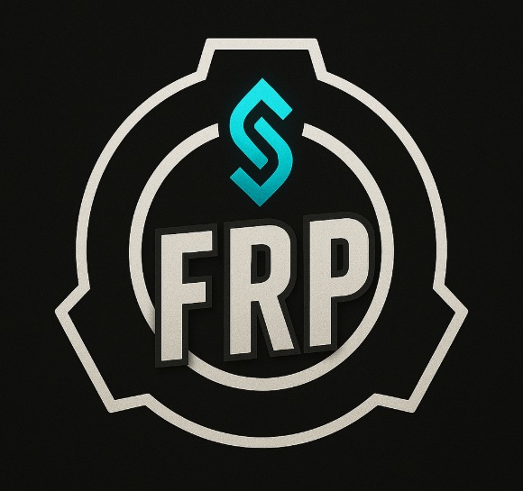

Présentation
Bienvenue sur le Site du règlement du serveur "Starlight" LE serveur SCP SL RP de la communauté FRP.
Staff (Serveur SCP SL):
Gérant : ytfab978, .hexait, gabrield3842 .
Community Manager
Manager RP :
Modérateur SCP SL : chefmodern5798695, ace_sync1135, m.187wwe, gaby5dio,_jojo321
Modérateur Discord :
Règles RP
- Obligation de faire son Pain RP et Fear RP (action de mimer la douleur et la peur quand les circonstences sont présentes)
- NLR : oublie des 30 dernières minutes après un kill.
- Interdits : Meta gaming (se servir de la liste des joueur pour RP), Hard RP (Action impossible à faire de façon réaliste ), le camp (rester plus de 1 minute dans une piece dans le but de bloquer des joueurs ou la partie).
- Le Troll incluant vol de stuff, HRP vocal, freekill hors team hostile, teamkill et interdit
Règles Humains
- Sécurité Fondation : Total Connaissances des menaces du site SCP, classe D et Groupe d'interet. Ils sont serieux et priorise l'évacuation des scientifiques. Allié : MTF, Fondation | Ennemie : Chaos insurgency
- Classe D : Aucune Connaissances des menaces ni des Groupes d'interet. ils cherchent à s'enfuire peut importe les moyens mais ne savent pas comment. Alié : à leur choix
- Membre de la fondation (Scientifiques...) : Total Connaissances des menaces du site et des groupes d'interets. Au debut de la brèche ils cherchent à s'enfuire. Allié : Fondation , MTF | Ennemie : Chaos Insurgency
- MTF e-11 "Nine-tailed-fox" : Total Connaissances des risques du site et des groupes d'intêrets mais doivent se renseigner sur leurs présences. ils sont serieux et cherchent à évacuer les membres de la fondation et reconfiné les SCPs. Le Capitaine MTF est le seul à choisir l'activation de la tête nucléaire si celle ci est réelment necessaire. Allié : Fondation | Ennemie : Chaos Insurgency
- Chaos Insurgency : Total connaissance de la fondation mais doivent se renseignersur leurs présences. Ils ont pour mission la récupération de SCP et / Ou de classe D. Si un ou plusieur Réprésseurs sont présent, ils peuvent faire exploser la nuke sur avis des Répresseurs (Ordre hiérachique Represseur > Maraudeur > Fusillé > Conscrit)
Règles SCPs
- SCP 173 "The statue" : Pas de conscience mais violente elle se déplace aléatoirement. Elle est incapable de faire des stratégies et tue des qu'elle voit une personne. Si cette personne n'est plus poursuivable elle cherche une autre proie. Il ne prete pas attention a la douleur
- SCP 096 "The shy guy" :Pas de conscience, il se déplace aléatoirement. Pour des cause de Fair play, pas dans la meme zone que 173 et on ne doit prendre sa main pour l'emmener. Si une personne le voit, il devra la tuer. Cette personne ne devra pas s'enfuire autrement qu'a pied (pas ascenseur)Il ne prete pas attention a la douleur
- SCP 106 "The Old Man" :conscience et Sadique il peut tendre des embuscades et jouer avec ses victimes. Il peut en toute intelligence fuir quand bon lui semble
- >SCP 049 "The Plague Doctor" :Conscient il cherchera juste à soigner la pestilence dont il est le seul à voir les infectés. Il n'est pas forcement hostile a la fondation mais si un membre du personnel se fait soigner il sera "hostile" et devra l'annoncer avant d'attaquer la fondation. Si il se rend il doit donc etre extrait et ne peut pas redevenir hostile.
- SCP 939 "Multiples Voices" :Concient mais aveugles ils se deplacent aux centre des couloirs en se repèrant aux bruits uniquement. Ils suivront le bruit et attaqueront. En cas de No-Pain il est autorisé de tuer directement. Si il subit trop de degat (HP) il peut se replier
- SCP 079 "Old AI" :Conscient et hostile a la fondation il cherchera à aider les SCPs et les classe D en les redirigeant ou parlant à travers les hauts parleurs. Le chat SCP n'est pas un moyen de communication
- SCP 049-2 "Cured" : Inconscient, il suivra les ordres du docteur et si il est hors de porté du docteur, il tuera jusqu'a sa mort.